3
Working with a Virtual Hierarchy
This chapter explains how you can generate, view, and edit a virtual layout hierarchy.
This chapter covers the following topics:
- Generating a Virtual Hierarchy
- Generating Soft Blocks for a Virtual Hierarchy
- Viewing a Virtual Hierarchy
- Setting the Display Controls
- Viewing Virtual Hierarchy Overrides
- Adjusting the Area Boundary
- Viewing Dynamic Display Measurements for a Virtual Hierarchy
- Level-1 Editing of a Virtual Hierarchy
- Editing a Virtual Hierarchy Using the Context-Sensitive Menu
- Editing a Virtual Hierarchy Clone
Generating a Virtual Hierarchy
To generate a virtual hierarchy:
-
In Layout EXL, invoke the Design Planner toolbar.
Alternatively, launch the Design Planning Workspace.
The Design Planning Toolbar displays. -
Click the Generate All From Source (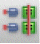
)toolbar button.
The Generate Layout form displays with the Virtual Hierarchy option in the Design Planning group box selected. - (Optional) Choose the other layout generation options.
-
Click OK.
Design Planner generates the layout components from scratch for the selected schematic source.
For the schematic instances that have no soft or hard block, the Design Planner generates a virtual hierarchy, which can be accessed using the Navigator assistant. For more information, see Viewing a Virtual Hierarchy.
For schematics that only have pins, no instances or physical binding, or for symbols in the schematic hierarchical design that have a missing schematic, the Design Planner generates soft blocks when the virtual hierarchy is generated. For more information, see Generating Soft Blocks for a Virtual Hierarchy.
Related Topics
Generating a Virtual Hierarchy
Generating Soft Blocks for a Virtual Hierarchy
Generating Soft Blocks for a Virtual Hierarchy
To generate a soft block for a symbol block that has a missing schematic or a schematic that has pins but no instances or physical binding:
-
In Layout EXL, invoke the Design Planner toolbar.
Alternatively, launch the Design Planning Workspace.
The Design Planning Toolbar displays. -
Click the Generate All From Source (
) toolbar button.
The Generate Layout form displays, with the Virtual Hierarchy and Auto Generate Soft Blocks check boxes already selected. You can use the generateVirtualHierarchy and generateSoftBlocks environment variables to control the default values of the fields.
In the PR Boundary tab, the Virtual Hierarchy Area Boundary and the Soft Block group boxes are now enabled. -
In the Virtual Hierarchy Area Boundary group box, choose from Enclose by or Utilization (%) to specify how the area boundary for the virtual hierarchy is created.
If choosing Enclose by , type a value in the adjacent field to specify the distance from the objects inside the virtual hierarchy at which the area boundary is created. Alternatively, set the areaBoundaryEnclosure environment variable.
If choosing Utilization (%) , type a value in the adjacent field to specify the acceptable area utilization percentage for deriving the size of the area boundary for the virtual hierarchy. This is automatically set to the same utilization percentage as the PR Boundary. Alternatively, set the Layout XL initUtilization environment variable. - Choose the appropriate hierarchy level for which the area boundary settings must be applied.
- In the Area field, type a value to specify the area of the soft blocks to be created.
-
Click OK.
The Design Planner generates the layout components from scratch for the selected schematic source.
For the top-level virtual hierarchy blocks that have missing schematic or a schematic with only pins but no instances or physical binding, the Design Planner first searches for soft block definitions through the Configure Physical Hierarchy (CPH) window. If relevant definitions are found, matching soft blocks are generated in the layout canvas.
If relevant definitions are not found in CPH, the Design Planner generates soft blocks and PR boundary based on the corresponding symbol view using the following environment variables:-
initIOPinLPP,initIOPinWidth, andinitIOPinHeightfor soft blocks -
initAreaUitlization,aspectRatio, andlxGenerateAreafor PR boundary
The placement of pins in soft blocks is performed based on the symbol view.Placement of pins based on the symbol view results in creation of identical pins in terms of height, width and layer purpose-pair. Placement based on the physical configuration defined in CPH lets you specify a unique value for pins and the PR boundary.Any top-level virtual hierarchy blocks that have an ignore for generation attribute set on the instances do not have their soft blocks created in the virtual hierarchy.
The generated virtual hierarchies and soft blocks can be accessed using the Navigator assistant under the Virtual Hierarchy data set. For more information, see Viewing a Virtual Hierarchy and Accessing Hierarchical Objects. -
Related Topics
Generating a Virtual Hierarchy
Viewing a Virtual Hierarchy
In Layout EXL, the Navigator assistant supports three additional data sets for displaying the generated virtual hierarchies and related components:
-
Virtual Hierarchy
See Accessing Virtual Hierarchies. -
Virtual Hierarchy Clones
See Accessing Virtual Hierarchy Clones. -
Hierarchy
See Accessing Hierarchical Objects.
Each of these predefined data sets, as displayed in the figure below, is available under the DESIGN PLANNING category.
Accessing Virtual Hierarchies
To access the generated virtual hierarchies and interface nets in the layout canvas:
-
In the Navigator assistant, select the Virtual Hierarchy data set.
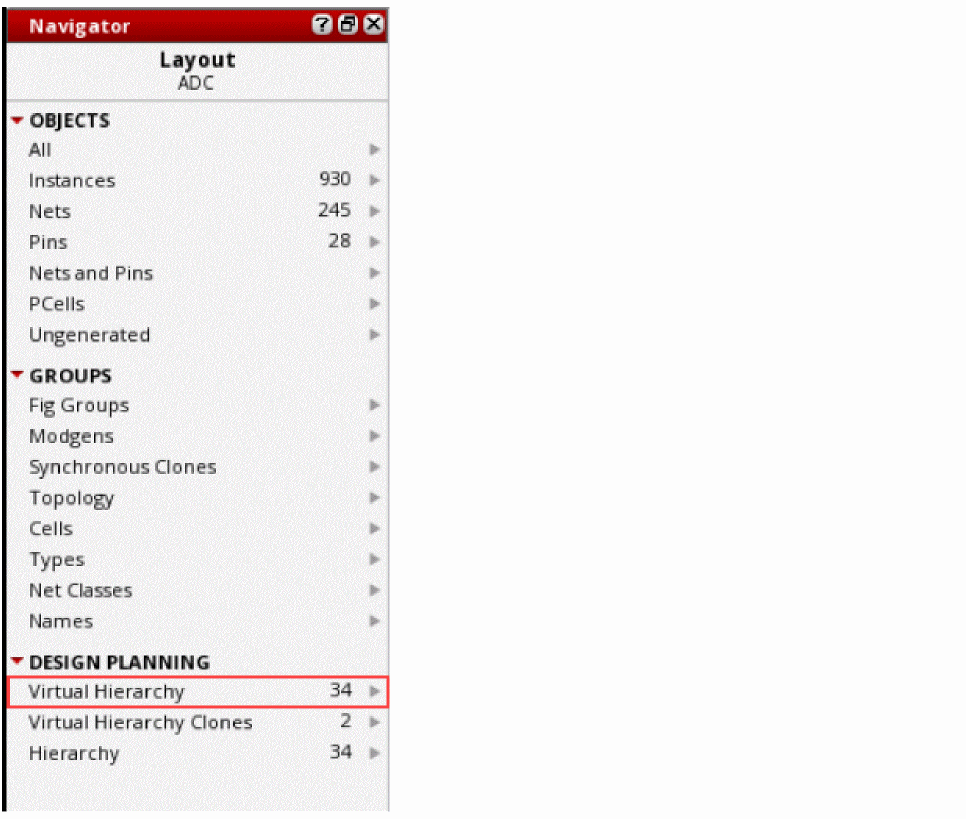The Navigator tree updates to display the available virtual hierarchies and the associated instances and nets. The virtual hierarchy is represented using an amoeba-shaped icon (), as displayed in the figure below. If the virtual hierarchy is created as a group, it is represented in the Navigator using the group ()icon.
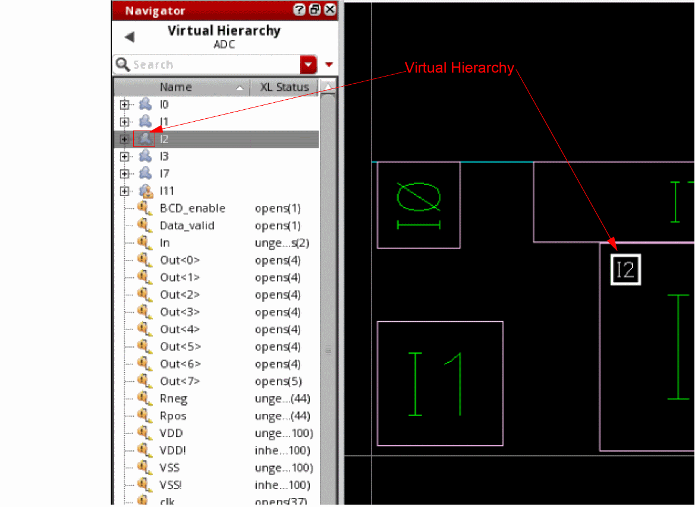 -
(Optional) Click a virtual hierarchy in the Navigator tree.
The corresponding object is selected in the layout canvas. The Show Selection Info toolbar updates to display the following information related to the selected virtual group: display name, type of virtual group—generated, clone, or created, placement status, and the display stop level value. If a virtual pin is selected, the Show Selection Info toolbar updates to display the layer and net name on which the pin is created and the pin width and height. -
(Optional) Click the (+) button adjacent to the virtual hierarchy icon in the Navigator tree to view the objects inside the virtual hierarchy.
The selected virtual hierarchy is expanded and the objects inside the hierarchy are listed in the Navigator tree, as displayed in the figure below. In addition, the Navigator assistant displays the XL Status of the virtual hierarchy components.
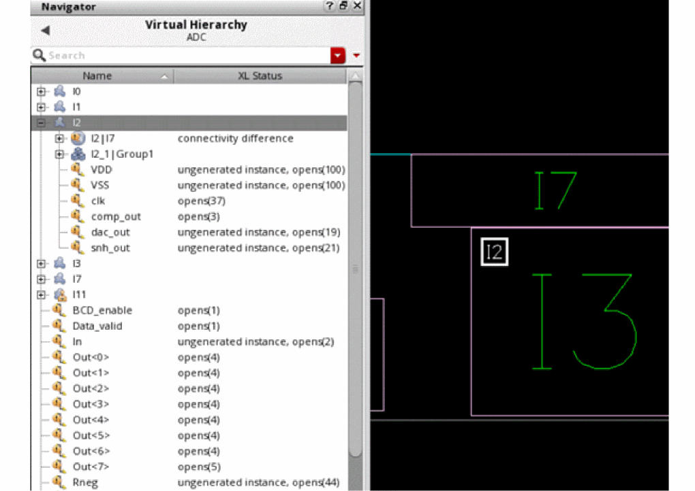A virtual hierarchy can also contain an instance (or more) of another virtual hierarchy as one of the components. Moving such a virtual hierarchy around the layout canvas will display flight lines on the canvas. However, if the virtual hierarchy you move is opaque, which means it has no contents, no flight line will be generated to the virtual hierarchy. -
(Optional) Click a virtual hierarchy component to view the corresponding layout representation on the canvas. If you select an interface net associated with a virtual hierarchy in the Navigator tree, Layout EXL creates a probe highlighting all the associated instances and nets in the layout canvas, as displayed in the figure below.
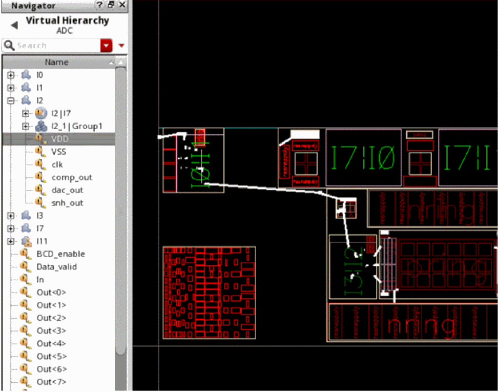If you cross-select the schematic representation of a virtual hierarchy, the boundary of the virtual hierarchy is highlighted in the layout canvas. If the cross-selected virtual hierarchy is opaque, which means it has no contents, no highlights are created in the layout canvas. -
(Optional) Right-click a virtual hierarchy in the Navigator tree to perform any of the operations supported through the context menu.
For more information on the context menus, see Editing a Virtual Hierarchy Using the Context-Sensitive Menu.
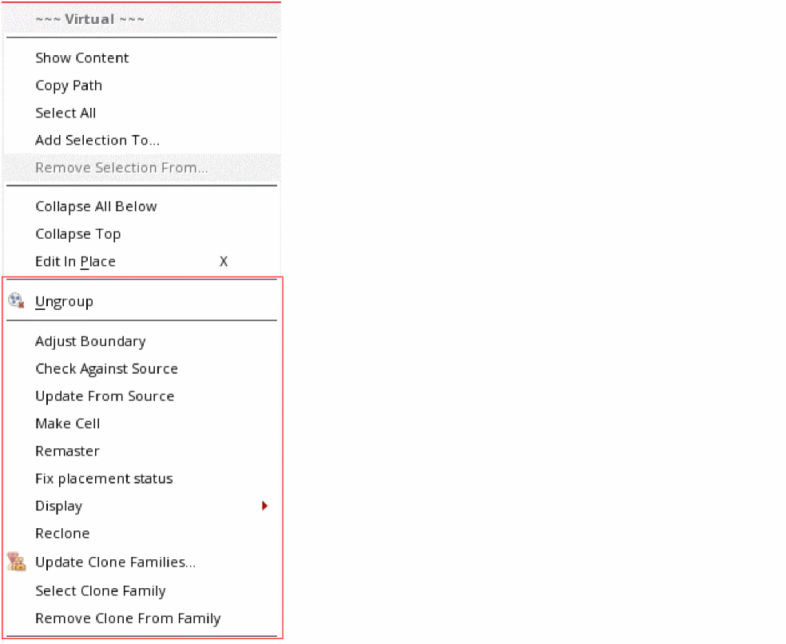
Related Topics
Generating a Virtual Hierarchy
Accessing Hierarchical Objects
Accessing Virtual Hierarchy Clones
The virtual hierarchy clones generated in the layout are categorized under the Virtual Hierarchy Clones data set in the Navigator assistant.
-
In the Navigator assistant, select the Virtual Hierarchy Clones data set.
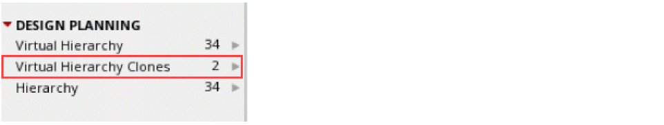The Navigator tree updates to display the available virtual hierarchy clone families. The virtual hierarchy clone family is represented using the () icon in the Navigator assistant, as displayed in the figure below. The corresponding virtual hierarchy clones are represented using the () icon.
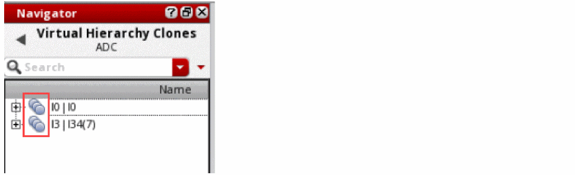 - (Optional) Click the (+) button adjacent to the virtual hierarchy clone family icon in the Navigator tree to view the corresponding clone family members.
- (Optional) Click the (+) button adjacent to the virtual hierarchy clone icon in the Navigator tree to view the objects inside the virtual hierarchy clone.
-
(Optional) Right-click a virtual hierarchy clone in the Navigator tree to perform any of the operations supported through the context menu.
A virtual hierarchy clone supports three additional commands in the context-sensitive menu:
For more information on the context menus, see Editing a Virtual Hierarchy Using the Context-Sensitive Menu.
Related Topics
Generating a Virtual Hierarchy
Accessing Hierarchical Objects
Accessing Hierarchical Objects
The hierarchical objects associated with the generated virtual hierarchy are categorized under the Hierarchy data set in the Navigator assistant.
Selecting the data set updates the Navigator tree to display the hierarchical instances such as instances, interface nets, soft blocks, sub-Modgens, clones, and so on, associated with the generated virtual hierarchies. In addition, the data set displays virtual hierarchies, if any, existing in the hierarchy of a virtual hierarchy. The XL Status of the hierarchical objects is also displayed. For soft blocks, the information balloon of the instance displays the message that the selected instance is a soft block.
Related Topics
Generating a Virtual Hierarchy
Accessing Virtual Hierarchy Clones
Viewing the Virtual Hierarchy Types
Virtual hierarchies can be created, cloned, or generated. This means a layout in EXL can have three different types of virtual hierarchies—depending on how the virtual hierarchies were formed.
To support ease of identification, the bounding box of the virtual hierarchies in the layout can be color-coded differently using the Color options in the
Viewing the Virtual Hierarchy Placement Status
To know whether a virtual hierarchy has its placement fixed or not, you can check its bounding box.
- If the bounding box of a virtual hierarchy is a solid line, as shown in the figure below on the left, the placement status of the virtual hierarchy is Fixed.
-
If the bounding box of a virtual hierarchy is a dashed line, as shown in the figure below on the right, the placement status of the virtual hierarchy is None.
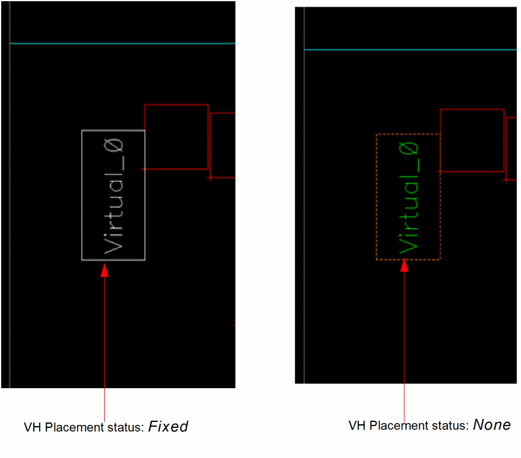
Setting the Display Controls
By default, when a virtual hierarchy is generated, the Design Planner sets its display depth to 0 to hide the contents within. This helps reduce the clutter at the top level, which is otherwise possible, given that a virtual hierarchy is flat at the top level.
Because the top-cell layout of a virtual hierarchy is flat, setting the display control enables you to show connectivity to the lower-levels instances or the virtual hierarchy at a lower level, which is not possible when working with real cellviews. This access to the connectivity information for lower-level cells allows you to make context-sensitive connections that are useful for creating efficient design plans.
You can choose to display (or hide) the virtual hierarchies at different levels, depending on the task being completed. The Design Planner enables you to control the display level at a global level, although it also honors the display overrides that you may have set on a specific virtual hierarchy. For more information on viewing the individual overrides set on a virtual hierarchy, see Viewing Virtual Hierarchy Overrides.
Design Planner provides two options for you to enable display controls for better layout design planning:
-
Display Depth Options
The Design Planner toolbar provides the following three display control options.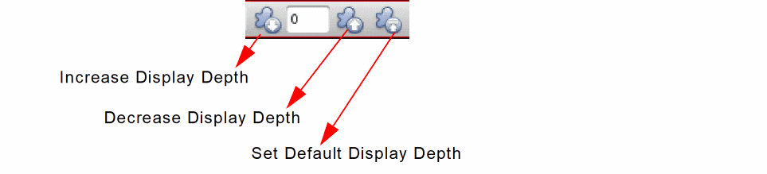 -
Analyze Connectivity Command
Draws flight lines between connected virtual hierarchy figGroups. You can select one of the connected virtual hierarchy figGroups to view the connections to the other associated virtual hierarchy figGroup.
See Analyze Connectivity.
Setting Display Depth
Design Planner enables you to control the display depth globally for all the components in the design, or only for the selected components. You can choose to navigate and display the design.
To increase (or decrease) the display depth for all the components in the design:
-
In the Design Planner toolbar, select the Increase Display Depth toolbar button.
Select the Decrease Display Depth toolbar button, if the display depth needs to be decreased.
The display depth of all the components is incremented (or decreased) by one level and the layout canvas also displays the components that are at the next level.
To increase (or decrease) the display depth for a virtual hierarchy:
- In the layout canvas or the Navigator, select the virtual hierarchy for which the display depth needs to be increased (or decreased).
-
In the Design Planner toolbar, select the virtual hierarchy Increase Display Depth toolbar button.
Select the Decrease Display Depth toolbar button, if the display depth needs to be decreased.
Alternatively, right-click the virtual hierarchy in the Navigator assistant or the layout canvas and choose Display – Increment to increase the display depth or Display – Decrement to decrease the display depth.
The display depth of the selected virtual hierarchy is incremented (or decreased) by one level and the layout canvas also displays the components that are at the next level.
Viewing Virtual Hierarchy Overrides
For designs that have individual virtual hierarchies set to different stop levels, types, placement status, and so on, you can view the individual virtual hierarchy overrides using the information balloon. You can customize the information balloon to selectively display measurements such as Placement Status, Stop Level, and Type, as shown in the figure below, when the cursor is hovered over a virtual hierarchy.
For more information on viewing the information balloons and other dynamic measurement displays for virtual hierarchies, see Viewing Dynamic Display Measurements for a Virtual Hierarchy.
Related Topics
Adjusting the Area Boundary
The virtual hierarchies you create using the Design Planner can have a rectangular or a rectilinear area boundary. You can choose the appropriate boundary type to be created using the Adjust Boundary form, and the Design Planner automatically creates or adjusts the area boundary, as specified.
Alternatively, you can register an area estimation function to specify the area boundary of a virtual hierarchy. See Registering a User-Defined Area Estimation Function.
Registering a User-Defined Area Estimation Function
Adjusting the Area Boundary of a Virtual Hierarchy
To adjust the area boundary of a virtual hierarchy, you can register an area estimator function as below.
procedure(myFunction(figGroupId @optional (contactArea 1.0)
prog((area insts)
// Function body to calculate area involving virtual hierarchies
insts = setof(x figGroupId~>members x~>objType == "inst")
foreach(ins insts
area = area + ins~>master~>prBoundary~>area * contactArea
)
return(area)
)
)
You can register the function in deferred mode, as shown below.
leRegAreaEstimator(
'myFunction
"simpleAreaEst"
'('group)
'((contactArea 1.0))
"deferred"
)
Where deferred means that the function is applied only when all the required information is available. In this example, the virtual hierarchies are considered for area estimation only when the Generate All From Source command is run.
deferred mode and then choose to generate virtual hierarchies with area boundaries, the PR boundary estimation is deferred until the area boundary of the virtual hierarchy is created. This allows the area estimation function to use the virtual hierarchy area boundary values to determine the area for the PR boundary.
Alternatively, you can register the function in direct mode, as shown below.
leRegAreaEstimator(
'myFunction
"simpleAreaEst"
'('group)
'((contactArea 1.0))
"direct"
)
Where direct means the function is applied when you choose the PR Boundary based or Bbox based area estimators on the Adjust Boundary form.
Generating a Custom Virtual Hierarchy Block Size
To generate a virtual hierarchy of custom block size during a Generate All From Source or an Update Components And Nets run, you can register an area estimation function as below:
procedure(myFunction(figGroupId))
let(((area 0.0))
area
list(area)
list(area 'util f_util) ; Overrides the default Utilization % value specified on the form. Accepts both integer and float values such as 25 or 25.0.
list(area 'aspect f_aspect) ; Overrides the default Aspect ratio value specified on the form. Accepts both integer and float values such as - 1 or 1.0.
list(area 'util f_util 'apsect f_aspect) ; Overrides both the Utilization % and Aspect ratio values specified on the form.
list(area 'width f_width) ; Overrides the Width value specified on the form. Accepts only float values.
list(area 'height f_height) ; Overrides the Height value specified on the form. Accepts only float values.
Alternatively, you can use the custom area generation function with a utilization function, f_util, as shown below:
(area 'util f_util 'width f_width)
list(area 'width f_width 'util f_util)
list(area 'util f_util 'height f_height)
list(area 'height f_height 'util f_util)
To specify only the width and height values to generate a custom virtual hierarchy block, use the function as below:
list('width f_width 'height f_height)
list('hight f_height 'width f_width)
Adjusting the PR boundary of a Soft Block
To adjust the PR boundary of a soft block, you can register an area estimator function as below.
procedure(myFunction(cellViewID @optional (contactArea 1.0)
prog(((area 0.0))
// Function body to calculate area involving soft blocks
insts = setof(x figGroupId~>members x~>objType == "inst")
foreach(ins cellView~>insts
area = area + ins~>master~>prBoundary~>area * contactArea
)
return(area)
)
)
You can register the function in deferred mode, as shown below.
leRegAreaEstimator(
'myFunction
"simpleAreaEst"
'('cellView)
'((contactArea 1.0))
"deferred"
)
Where deferred means that the function is applied only when all the required information is available. In this example, the soft blocks are considered for area estimation only when the Generate All From Source command is run.
Alternatively, you can register the function in direct mode, as shown below.
leRegAreaEstimator(
'myFunction
"simpleAreaEst"
'('cellView)
'((contactArea 1.0))
"direct"
)
Where direct means the function is applied when you choose the PR Boundary based or Bbox based area estimators on the Adjust Boundary form.
For more information on registering an area estimation function, see
Automatic Adjustment of an Area Boundary
The Design Planner also automatically adjusts the area boundary of a virtual hierarchy when:
Moving Instances Outside a Virtual Hierarchy
The Design Planner can automatically resize the area boundary of a virtual hierarchy to accommodate an instance (or instances and figGroups other than row region) that are moved outside the boundary. If adjusting the area boundary of the virtual hierarchy causes its area boundary to go outside the higher-level virtual hierarchy that includes the adjusted virtual hierarchy, then the boundary of the higher-level virtual hierarchy is also automatically adjusted. To allow this automatic area boundary adjustment of virtual hierarchies across the hierarchy, select the Auto adjust area boundary option on the
To automatically adjust area boundary when moving an instance outside a virtual hierarchy:
- In the Design Planner toolbar, click the Increase Display Depth button to increase the display depth stop level value to a value greater than 0.
- In the Virtual Hierarchy Options form, select the Auto adjust area boundary option and click OK.
-
In the layout canvas, select an instance inside a virtual hierarchy and drag it to a position outside the area boundary of the virtual hierarchy.
Flight lines appear on the canvas, showing instance connections to other objects still inside the virtual hierarchy. -
Drop the selected instance outside the area boundary of the virtual hierarchy.
The area boundary of the virtual hierarchy automatically resizes to fully accommodate the moved objects.
Note:
- If the area boundary of the adjusted virtual hierarchy now falls outside the area boundary of the higher-level virtual hierarchy, the area boundary of the higher-level virtual hierarchy is also automatically adjusted.
-
Rectilinear boundaries that are resized are automatically adjusted to form rectangles. To prevent the automatic adjustment of the area boundary, you can set the autoAdjustBoundary environment variable to
nil.
Adding Instances to a Virtual Group
The Design Planner allows you to add new instances to an existing virtual group created using the Create Virtual Group command. To accommodate the new instances, the area boundary of the updated virtual group is automatically adjusted.
To add a new instance to a virtual group:
- In the layout canvas or Navigator assistant, select the virtual hierarchy to be updated.
-
Choose the Edit – Group – Add to Group option.
The Add to Group command is invoked, as indicated by the trailing ellipsis 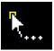 following the pointer. -
Click the layout instance to be added to the group.
The area boundary of the selected virtual group automatically resizes to accommodate the new layout instance. The Navigator assistant updates to reflect the newly added instance as belonging to the selected virtual group.Rectilinear boundaries that are resized are automatically adjusted to form rectangles. To prevent the automatic adjustment of the area boundary, you can set the autoAdjustBoundary environment variable tonil.
Viewing Dynamic Display Measurements for a Virtual Hierarchy
When manually adjusting the area boundary of a virtual hierarchy, enable the Measurement Display On option in the Options – Dynamic Display form.
This enables dynamic display of the area, label, stop level, type, placement status, and similar others. The measurements appear dynamically on the canvas during an edit, such as when using the Stretch command to adjust the area boundary of a virtual hierarchy. The in-context availability of these key measurements enables you to be precise when selecting the area for a virtual hierarchy during a Stretch or a Constant area stretch operation.
The measurements, as shown in the figure below, are displayed dynamically on the layout canvas as you perform the Stretch command.
You can also choose to display the virtual hierarchy measurements in an information balloon to make them available when the cursor hovers over a virtual hierarchy.
delta x, y measurements dynamically, you must also select them for display in the information balloon.
Alternatively, you can define a
For more information on dynamic display measurements, see
Level-1 Editing of a Virtual Hierarchy
A virtual hierarchy can be automatically generated when Generate All From Source is run with the Virtual Hierarchy option selected. See Generating a Virtual Hierarchy for more information.
If the virtual hierarchy is automatically generated, you can update the contents of the hierarchy at the top level. However, for virtual hierarchies that are manually created, level-1 editing is restricted to avoid any unexpected edits to the level-1 objects. For the contents of a created virtual group to be selected and for the virtual group to be edited, the true.
Editing a Virtual Hierarchy Using the Context-Sensitive Menu
The Design Planner provides quick access to some useful commands through the context-sensitive menu of a virtual hierarchy and a virtual hierarchy clone.
To access the context-sensitive menu of a virtual hierarchy:
-
Right-click a virtual hierarchy in the Navigator assistant or the layout canvas.
The Virtual context-sensitive menu is displayed, as shown in the figure below. The context menu provides some generic commands supported in Layout EXL, in addition to a set of commands that are supported only for virtual hierarchies.When invoked from the Navigator assistant, the Virtual context-sensitive menu displays an additional command—Show Content.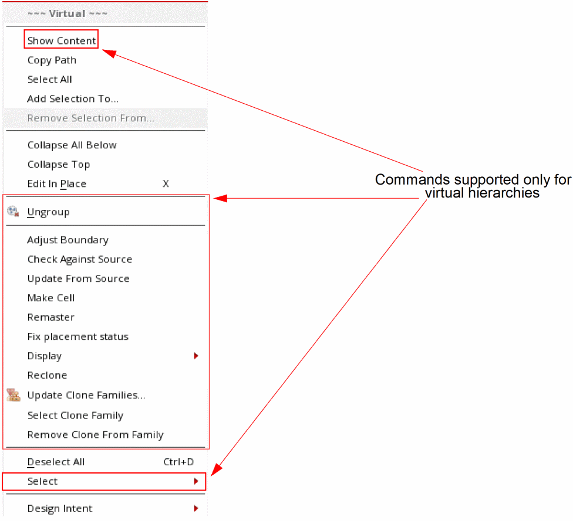
Context-Sensitive Command Menu Table
The table below details the context-sensitive menu commands that are supported for virtual hierarchies and virtual hierarchy clones.
| Command name | Supported for... | Use to... |
|---|---|---|
|
Switch the Navigator assistant Summary pane view to show the contents inside the selected virtual hierarchy. |
||
|
Delete the area boundary around the virtual hierarchy group and display the components as individual objects at the top level. Any virtual hierarchies that exist inside the ungrouped virtual hierarchy continue to exist as a virtual hierarchy group at the top level. |
||
|
Resize the virtual hierarchy at the top level and create boundaries at any levels. See Adjust Boundary. |
||
|
Check and report mismatches between the schematic and layout views of the virtual hierarchy currently being edited in place.
Any markers from a previously reported Check Against Source run are deleted to ensure that markers related only to the selected virtual hierarchy are reported.
See |
||
|
Updates the components from source for the virtual hierarchies selected at the top level or for the ones available on Edit In Place to update any mismatches in the selected set. |
||
|
Creates a new cellview and replaces the virtual hierarchy with an instance of this cellview. See Make Cell and Planning a Design. |
||
|
Replace the selected virtual hierarchy with the layout master that exists on disk. |
||
|
Set the Placement Status of the selected virtual hierarchy to
When toggled to Unfix placement status, sets the Placement Status of the selected virtual hierarchy to See Make Virtual Hierarchy and Planning a Design. |
||
|
Choose Increment to increase the display depth for all the selected virtual hierarchies. Choose Decrement to decrease the display depth for all the selected virtual hierarchies. Choose Set Default Display Depth to set the Default display depth to 0 and deselect all the objects that were previously selected. See Setting the Display Controls. Choose Highlight to highlight the selected virtual group contents on the canvas in the chosen color. Choose Unhighlight to remove the color highlights from the selected virtual group contents. |
||
|
Create virtual hierarchy clones belonging to the same master for the selected, generated virtual hierarchy. If the clone family was broken or any new clones were generated since the clone family was last updated, you can use the Reclone command to update the clone family. Select any of the clone sources to reclone all the clone family members belonging to the same master. You can also use the command to add Modgens to an existing virtual hierarchy clone. |
||
|
Update the status of the selected virtual hierarchy clone family, rename the clone family, remove a clone from the family, create and remove clone families, and add a group to an existing family. |
||
|
Select all the members of the selected virtual hierarchy clone family. |
||
|
Remove the selected virtual hierarchy clone from the virtual hierarchy clone family. |
||
|
Select external nets that have virtual pins as local nets for the selected virtual hierarchy. |
Editing a Virtual Hierarchy Clone
Similar to editing a top-level virtual hierarchy, you can perform some basic edits on a virtual hierarchy clone or a clone inside a virtual hierarchy without having to edit it in place. These top-level edits are limited to stretching, chopping, and adjusting the area boundary of a virtual hierarchy clone.
Any changes made to the clone area boundary due to stretching or chopping are automatically reflected across all the synchronous clones. This capability of top-level edit support for virtual hierarchy clones ensures ease of working with the clones from the top level.
To stretch a virtual hierarchy clone:
- Select the virtual hierarchy clone instance from the top level and choose the Edit – Stretch command.
The area boundary of the selected virtual hierarchy clone and all its synchronous clone counterparts is automatically stretched.
To chop the area boundary of a virtual hierarchy clone:
- Select the virtual hierarchy clone instance from the top level and choose the Edit – Basic – Chop command.
The area boundary of the selected virtual hierarchy clone and all its synchronous clone counterparts is chopped.
Recloning Virtual Hierarchy Clones
When virtual hierarchies belonging to the same master are created at different times, the virtual hierarchies are generated as individual instances.
To clone such virtual hierarchies:
All the virtual hierarchies that belong to the same master are cloned and added to a common clone family.
The Reclone command can also be used to update a clone family to add any new members. In this case, when a clone family already exists, the placement of the target clones is determined based on the selected clone source.
You can also use the Reclone command to generate Modgens inside a virtual hierarchy.
To add a Modgen to a virtual hierarchy:
- Right-click a clone in the clone family and choose Update Clone Families to remove the clone family.
-
Select one of the virtual hierarchy clone sources and choose Place – Modgen – Create/Edit Modgen.
A Modgen constraint is added to the selected virtual hierarchy. -
Right-click the generated virtual hierarchy containing the Modgen and choose Reclone.
All the virtual hierarchies in the clone family are recloned, and each of the members displays the Modgen constraint.
Editing Virtual Hierarchy Clones Containing Modgens
In a given clone family, only one clone, called the master clone, can contain real modgens. Other clones containing basic figGroups are called pseudo-modgens. Pseudo-modgens cannot be edited directly. If you attempt to edit a pseudo-modgen, the master clone is edited instead and any edits made to the master clone are synchronized and replicated in all the associated pseudo-modgens.
For a pseudo-modgen to accept the edits, it must exist inside a clone. Otherwise, the pseudo-modgen is treated as a basic figGroup, which cannot be edited using the
Related Topics
Return to top